| 日付 | 2009年5月1日（金） - 2009年5月5日（火） | ||||||||||
|---|---|---|---|---|---|---|---|---|---|---|---|
| 山域 | 南アルプス | ||||||||||
| メンバー | 単独 | ||||||||||
| 山行形態 | 4泊5日テント・無人小屋泊 | ||||||||||
| アクセス | 電車、バス | ||||||||||
| ルート (Map) |
|
3日目
昨日は到着が遅かったので、朝から水を汲みに行く事にする。
効率は悪いが仕方が無い。峠から沢に続くかすかな踏み跡を下っていく。
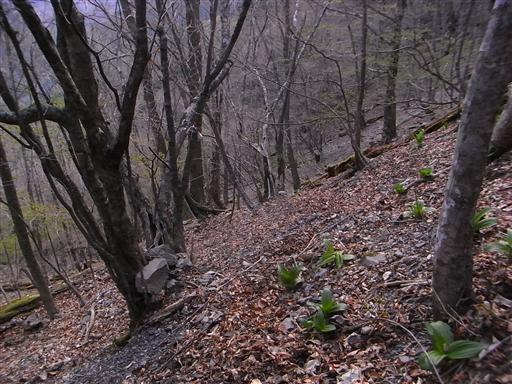
水場に到着。水量は豊富だ。
ここは稜線から往復で小1時間かかるが、貴重な水場だ。
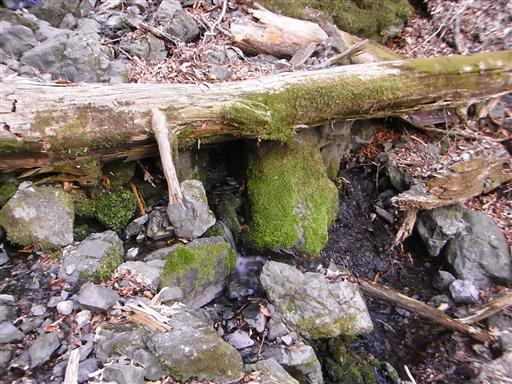
六呂場峠からは樹木の間からわずかに展望が広がる。
6:25に六呂場峠を出発。今日も遅い出発だ。
昨日は鎌崩越えに苦労した。今日は笹藪との格闘になるだろう。
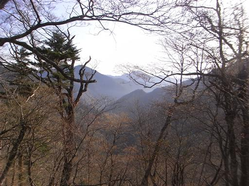
急坂を登ると尾根が広くなる。辺りに広がるのは笹原と縦横無尽に走る獣道だ。
まっすぐ目的地に向かわない獣道をひろいながら、少しずつ前進していく。
まるで巨大迷路だ。
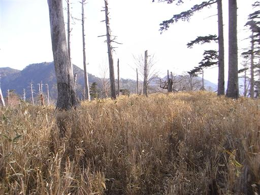
笹原の向こうに大きな黒沢山が望める。
この山も斜面の一角が大きく崩落している。
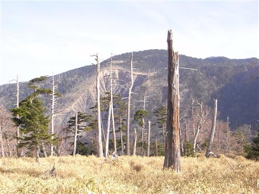
自然が創った巨大迷路を突破し、ようやく尾根がはっきりしてくる。
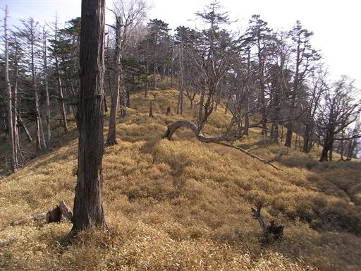
古い道標。もはや書かれていた文字は消えてしまって見えない。
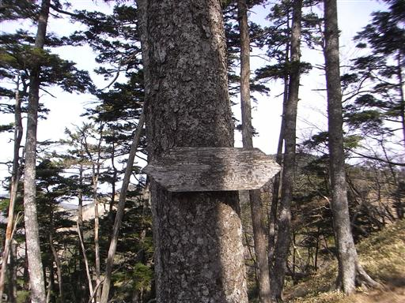
1995m峰に到着。素晴らしい展望が広がる。
今日も快晴だが、遠くの方には雲海が見えている。
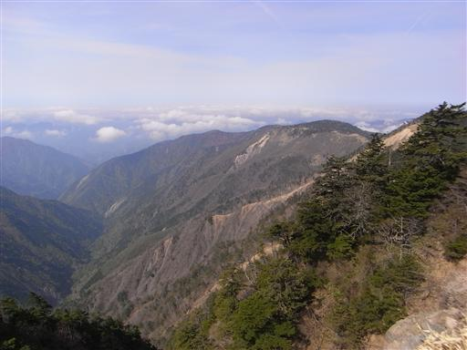
足元は崖。深い谷まで一直線に切れ落ちている。
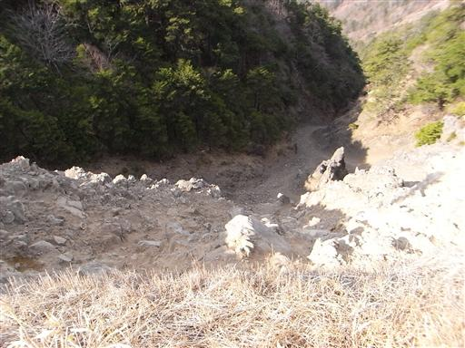
少し休憩して展望を楽しんだ後、黒沢山をめざす。
振り返ると、見事に崩壊した1995m峰が望める。
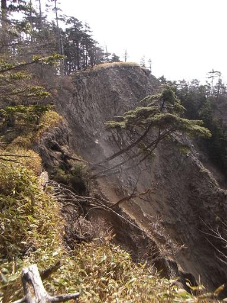
黒沢山への登りもだだっ広い斜面と笹原が広がっている。
笹原の中に突き立つ多くの立ち枯れた木が少々不気味だ。

黒沢山の山腹に見えた大きな崖の縁までやってくる。
崖に近づき過ぎないように気をつけながらルートを延ばしていく。
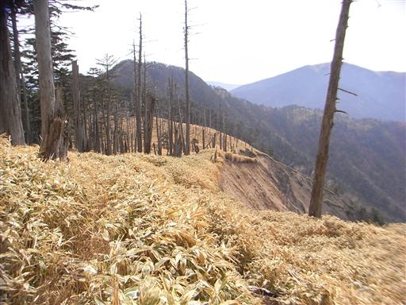
笹原の向こうには、昨日登った不動岳が大きく見える。
右に見える三角錐は黒法師岳だ。
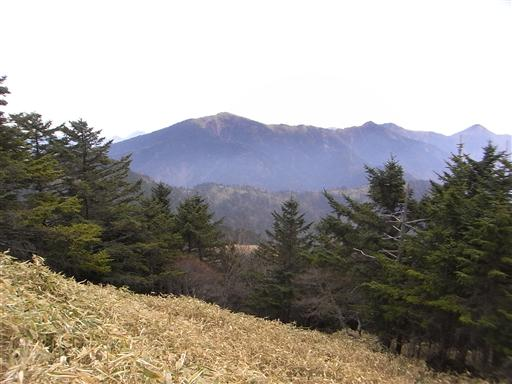
左手にはまだまだ残雪が豊富な中央アルプスが望める。
その左の方には御嶽山も望むことができる。
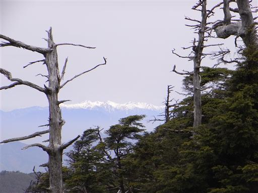
笹原の中にお茶が落ちている。ザックの脇に入れていて落としたものだろうか？
まだお茶は少し残っているが、賞味期限は昨年の冬を示していた。
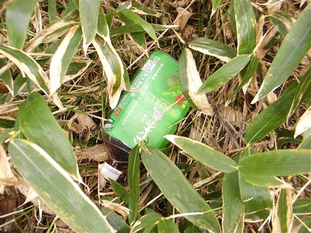
10:14 黒沢山山頂到着。標高2123m。
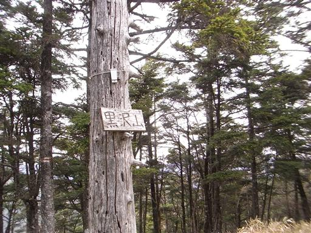
山頂は樹木に覆われ明るさは全く無い。
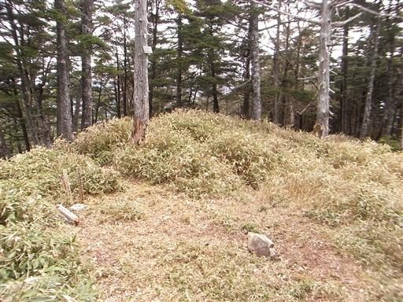
黒沢山から北上する北斜面に、ついに雪が現れる。
今までほとんど雪が現れなかったが、これからどんどん増えるのだろうか？
ここより標高の高い不動岳には全く雪がなかったため、少々ショックだ。
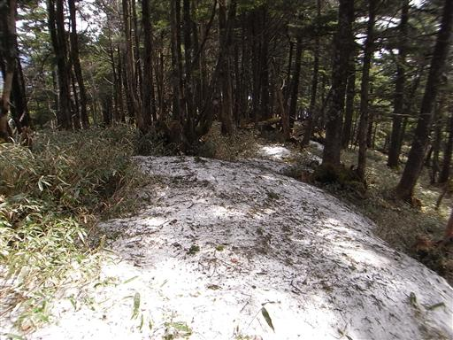
しばらく歩くと雪は消えたが、そのかわり針葉樹林の藪漕ぎが始まる。
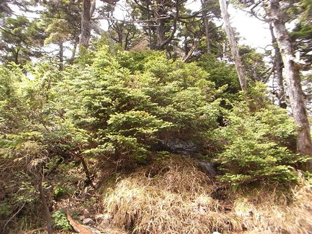
登山道はしばらく尾根を巻くようになる。この辺りは黒木に覆われた鬱蒼とした場所だ。
南ア深南部は苔に覆われた暗くて深い森と、明るく開放的な笹原と、
全く異なる二つの世界を持っている。
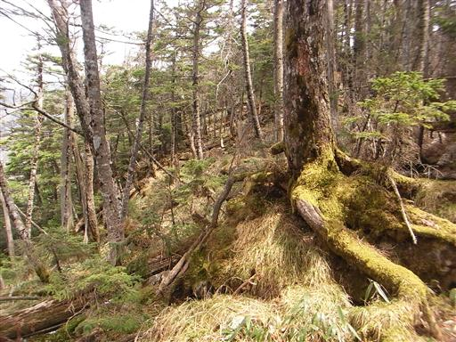
鹿のヌタ場。この辺りではたくさん見られる。
鹿の生息数は多いのだろう。
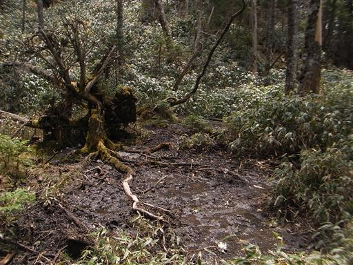
巻き道から尾根に戻る。辺りは笹が密になり、背が高くなってくる。
踏み跡は判然とせず登りにくい。
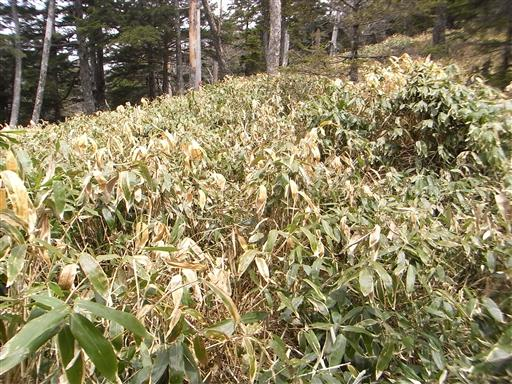
木に赤いスプレーが吹き付けられている。
登山道があると思い側まで行ってみるが、辺りは一面笹原が広がるのみ。
踏み跡は見当たらない。
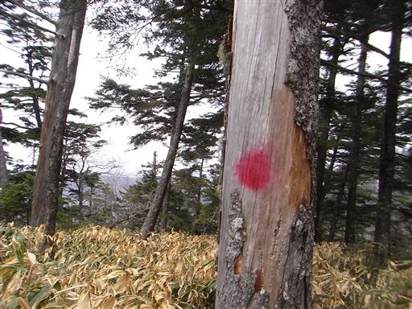
笹原にも赤いスプレーが吹き付けられている。
登山道を表しているつもりだろうか…
しかし付近に踏み跡は見当たらない。
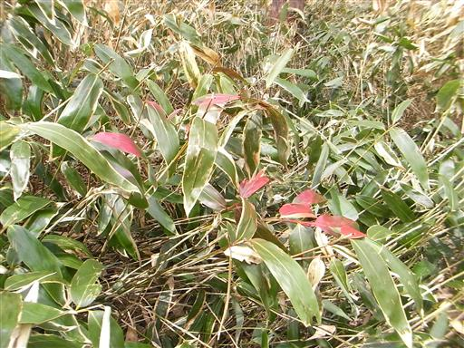
背を没する笹笹笹。縦横に走る笹藪に阻まれ、足が前に出ない。
ここまで酷い笹薮は初めてだ。2095m峰に向かって少しずつ笹を掻き分けていく。
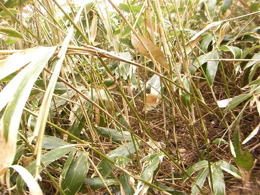
ぽっかりと笹がなくなった空間を過ぎると道は下りとなり、笹も少なくなってくる。
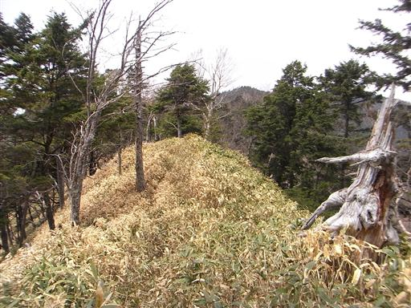
憎き2095m峰を振り返る。
この山は尾根をいくつも派生させる立派なピークだが、人が少ない山域ゆえ名前が付けられていない。
しかし、このピークの名前は忘れない。2095m峰。もう2度と行きたくない。
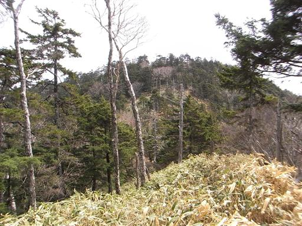
目の前に最終目標地点の光岳が姿を現す。他の山々に比べて桁外れに大きい。
まだ雪は豊富にありそうに見える。
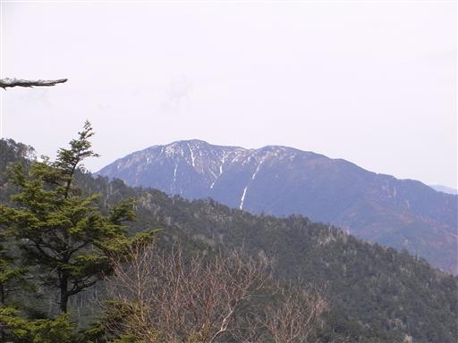
なぜか道端に箸ケース？が転がっている。
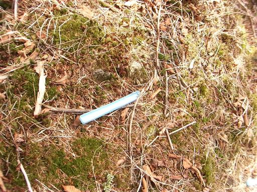
右手に合地山が見えてきた。
4つほどのこぶがあり見た目には冴えないピークだが、少し気になる山ではある。
主稜線からは外れているが、そこそこ登る人はいるらしい。
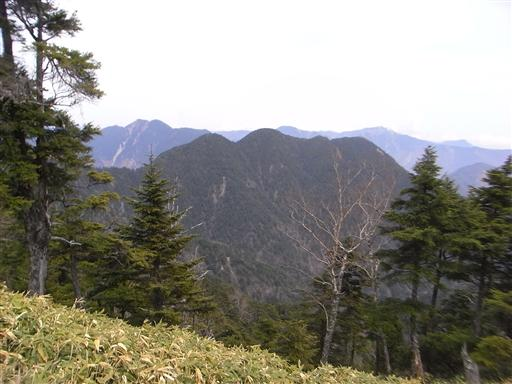
左手には深い谷間に走る林道が見える。
この林道を使えば中ノ尾根山へは比較的短時間で登れる。
こんなところにバスが通じているわけは無く、タクシーかマイカー登山者のみが利用できる道だ。
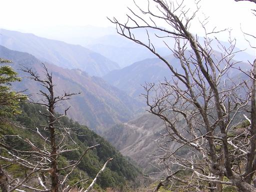
目の前に丸い中ノ尾根山が現れる。ようやく辿り付いた。
この辺りでおっさん二人組みが昼寝をしていた。南ア深南部では昼寝が流行っているのだろうか？
笹をがさごそと掻き分けながら近づいていくと、驚いて起きるのも皆同じだ。
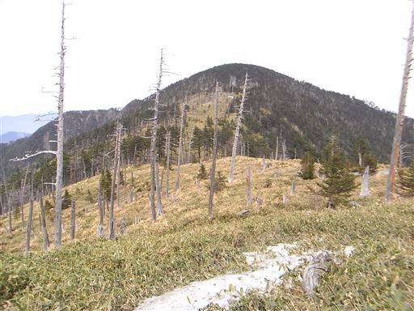
中ノ尾根山への登りは南斜面なのに雪が残っているところがある。
先ほどの登山者のものだろう、雪の上には足跡が見られる。
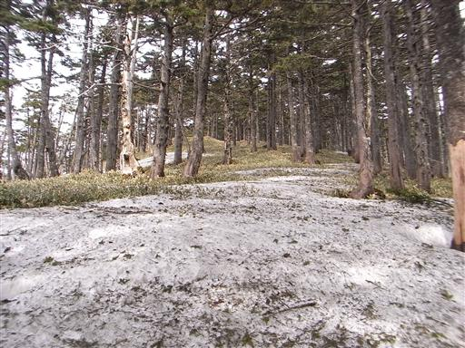
14:41 中ノ尾根山山頂到着。標高2296m。
難易度が高く、アクセスも悪く、南ア深南部主稜線の山々の中では
最も登頂しにくい山だと思っていたが、ついにその山頂に立てた。
雪に覆われているのか、三角点は見当たらない。
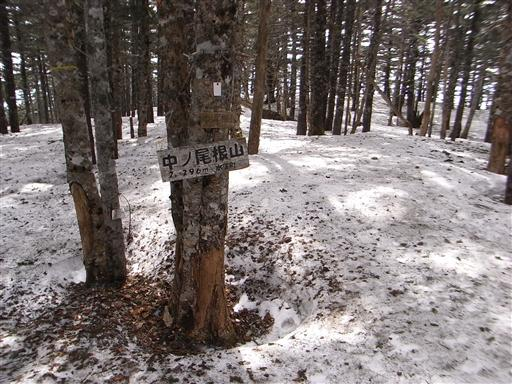
辺りの雪の量は30～50cm程度だろうか。
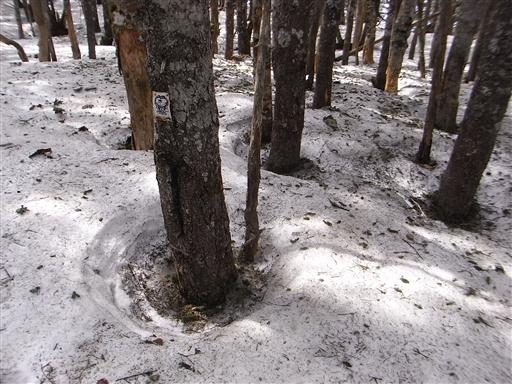
中ノ尾根山からの下りは、完全に雪面に覆われていて地面は見えない。
やはりだんだんと雪は深くなっている。光岳が心配になってくる。
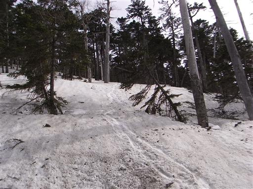
目の前の展望が大きく開ける。
左に見える美しい双耳峰は池口岳、その右が光岳だ。
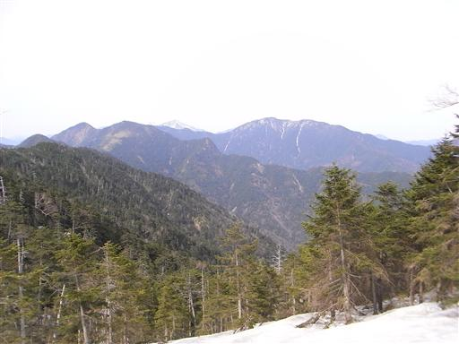
右手には光岳から伸びる寸又川左岸の山々が広がる。
左から信濃俣、大根沢山、大無間山だ。
ここから見る信濃俣は非常に美しい。いつか行くことがあるかもしれない。

中ノ尾根山を振り返る。
丸くて図体のでかい山だが、そこから伸びる尾根はずいぶんやせた尾根だ。
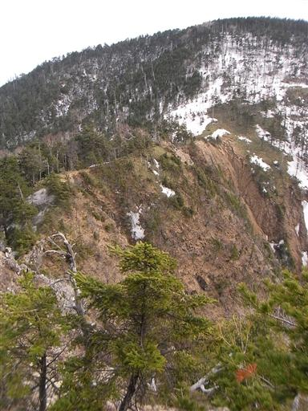
15:42 三又山山頂到着。標高2220m。
ここには水場があるらしいが、目の前の沢は急斜面の崖でとても下れそうに無い。
ここにテントを張るか、鶏冠山を目指すのか迷ったが、
まだ水は豊富にあるので先に進むことにする。
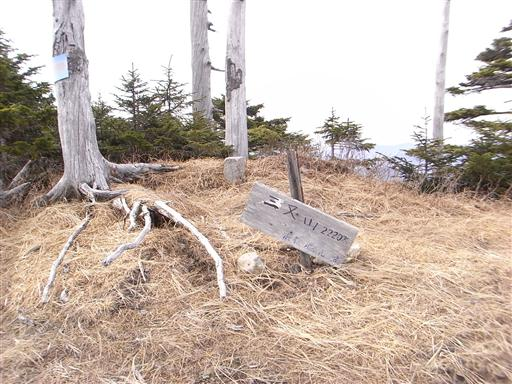
鶏冠山はなかなか鋭い山容の山だ。
この山は双耳峰だが、同じ双耳峰の池口岳の影に隠れてあまり目立たない。
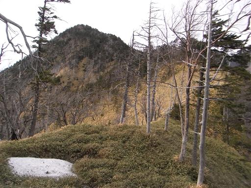
歩いてきた尾根道を振り返る。もはや本日最大の難所は去った。
後は歩きやすい遊歩道のような尾根を歩いていくだけだ。
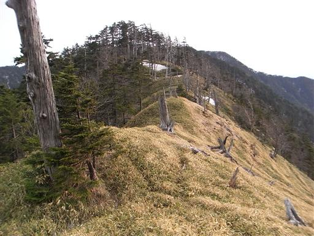
17:11 鶏冠山南峰山頂到着。標高2248m。
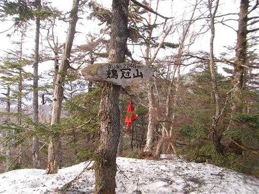
山頂は雪が解けている一角があって助かった。
少し傾斜はあるが、ここにテントを張ることにする。
今日も2人組みの登山者に出会っただけの静かな山行だった。
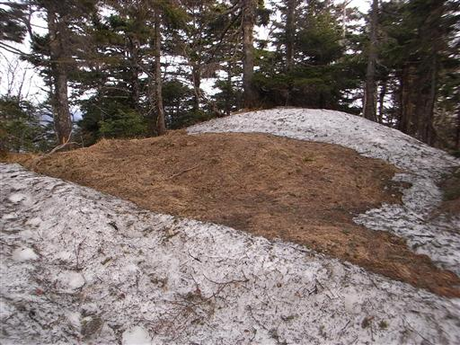